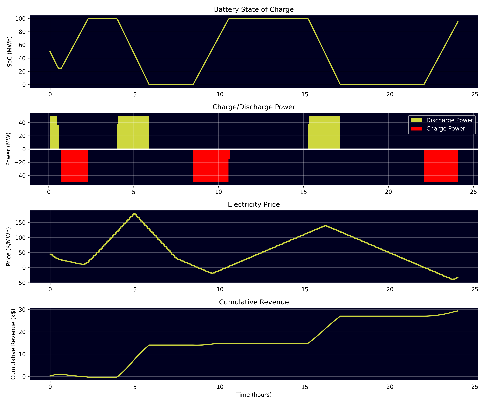

Simple Linear RTC-Tools BESS Optimisation Demo
{kind=link}
Image: Industrial Battery Energy Storage System. Source: Wikimedia Commons, CC BY-SA 4.0
Introduction
This example demonstrates how to use RTC-Tools to optimise a Battery Energy Storage System (BESS) for time arbitrage. The optimisation maximizes revenue by strategically charging during low electricity price periods and discharging during high price periods, while accounting for round-trip efficiency losses and cycling penalties.
Problem Formulation
Mathematical Model
The BESS optimisation problem can be formulated as follows:
Objective Function:
- Where:
\(P_{net}(t) = P_{discharge}(t) - P_{charge}(t)\) = Net power (positive for discharge, negative for charge)
\(\pi(t)\) = Electricity price at time t
\(\lambda\) = Cycling penalty factor
\(P_{charge}(t)\) = Charging power
\(P_{discharge}(t)\) = Discharging power
State of Charge Dynamics:
- Where:
\(SoC\) = State of charge in MWh
\(\eta\) = Round-trip efficiency
The factor 3600 converts from MJ to MWh (seconds to hours)
Variable Bounds:
Complementarity Constraints:
The complementarity between charging and discharging is enforced using binary variables and inequality constraints:
- Where:
\(b_{charge}(t)\) and \(b_{discharge}(t)\) are binary variables
\(P_{max} = 50\) MW is the maximum power rating
Model Implementation
Architecture Overview
The BESS optimisation follows a clear separation of concerns:
- Physical Asset Model (Modelica)
- The Modelica model (
BESS.mo) focuses purely on the physical behavior of the battery system: State of charge dynamics with efficiency losses
Power flow calculations
Physical constraints and bounds
No economic calculations
- The Modelica model (
- Value Stream Model (Python)
- The Python implementation (
bess.py) handles all economic aspects: Revenue calculations from energy arbitrage
Cycling penalty costs
Objective function formulation
Economic parameters and constraints
- The Python implementation (
Physical Asset Model (Modelica)
The BESS physical model is implemented in pure Modelica without external library dependencies:
model BESS
// Parameters
parameter Real capacity = 100.0 "Battery capacity in MWh";
parameter Real efficiency = 0.9 "Round-trip efficiency";
parameter Real max_power = 50.0 "Maximum charge/discharge power in MW";
// Variables
output Real soc(start=50.0, min=0.0, max=capacity) "State of charge in MWh";
output Real charge_power(min=0.0, max=max_power) "Charging power in MW";
output Real discharge_power(min=0.0, max=max_power) "Discharging power in MW";
output Real net_power "Net power (positive = discharge, negative = charge) in MW";
// Binary variables for complementarity
Boolean is_charging "True if battery is charging";
Boolean is_discharging "True if battery is discharging";
// Input variables
input Real price(fixed = true) "Electricity price in $/MWh";
equation
// State of charge dynamics
3600 * der(soc) = charge_power * sqrt(efficiency) - discharge_power / sqrt(efficiency);
// Net power calculation
net_power = discharge_power - charge_power;
end BESS;
Value Stream Model (Python)
Objective Function (Economic Model):
def path_objective(self, ensemble_member):
"""
Define optimization objective: maximize revenue minus cycling penalty.
This separates the economic value streams (calculated in Python) from
the physical asset model (defined in Modelica).
"""
# Revenue from energy arbitrage
revenue = self.state('net_power') * self.state('price')
# Cycling penalty based on total power throughput
cycling_penalty = self.cycling_penalty_factor * (
self.state('charge_power') + self.state('discharge_power')
)
# Total objective (negative because we want to maximize)
return -(revenue - cycling_penalty)
The objective function demonstrates the value stream modeling:
Revenue Stream:
net_power * price- income from energy arbitrageCost Stream:
cycling_penalty_factor * (charge_power + discharge_power)- operational costsOptimization Goal: Maximize net profit (revenue minus costs)
Solver Configuration:
def solver_options(self):
"""Configure solver options for mixed-integer optimization."""
options = super().solver_options()
options['casadi_solver'] = 'qpsol'
options['solver'] = 'highs'
return options
The example uses the HiGHS mixed-integer linear programming solver.
Path Constraints:
def path_constraints(self, ensemble_member):
"""Define path constraints (inequality constraints over time)."""
constraints = super().path_constraints(ensemble_member)
parameters = self.parameters(ensemble_member)
# Ensure only one mode can be active at a time (complementarity)
for t in self.times():
constraints.append((
self.state('is_charging') +
self.state('is_discharging'),
-np.inf,
1.0,
))
constraints.append((
self.state('charge_power') -
self.state('is_charging') * parameters["max_power"],
-np.inf,
0,
))
constraints.append((
self.state('discharge_power') -
self.state('is_discharging') * parameters["max_power"],
-np.inf,
0,
))
return constraints
The path constraints implement complementarity between charging and discharging.
Input Data
The example uses two CSV input files:
- timeseries_import.csv
Contains electricity price forecasts.
- initial_state.csv
Specifies the initial state of charge.
Running the Example
Install Dependencies:
uv syncRun the Optimization:
uv run python src/bess.py
This will: * Solve the optimisation problem * Export results to
output/timeseries_export.csvGenerate Plots and Summary:
uv run python src/plot_results.py
- This will:
Read the exported CSV results
Calculate economic metrics (revenue, costs)
Generate visualization plots
Display summary statistics
Save plots to
output/bess_optimisation_results.png
Alternative: Run Both Steps Together:
uv run python src/bess.py && uv run python src/plot_results.py
Results and Analysis
Key outputs from the optimization are visualized below:
{kind=link}
Figure: BESS optimisation results showing (top to bottom): State of Charge profile, Charge/Discharge power decisions, Electricity price signal, and Cumulative revenue over the 24-hour optimisation horizon.
Technical Details
- Mixed-Integer Linear Programming Approach
This example uses mixed-integer linear programming (MILP) to enforce complementarity between charging and discharging operations. Binary variables ensure that the battery cannot simultaneously charge and discharge. While this MILP approach works well, it’s important to note that non-linear formulations also exist for battery optimisation problems.
Towards Full Value Capture
We at PortfolioEnergy recommend a full non-linear programming (NLP) framework for maximum value capture. NLP unlocks capabilities that linear or mixed-integer approaches simply cannot match:
- Advanced Asset Modeling:
Non-linear efficiency curves
Temperature-dependent performance
Parasitic power modelling
Degradation models
- Sophisticated Market Modeling:
Non-linear price response functions
Non-linear bid/offer curves
Market impact modeling
The PortfolioEnergy open-core optimisation platform—built on RTC-Tools and already maximising value on three continents—gives traders, developers and aggregators an interrogatable “glass box” solution. In addition to the capabilities above, it supports full value stacking across wholesale and ancillary markets as well as probabilistic optimisation for true risk-adjusted dispatch.
Ready to see the numbers? Reach us at info@portfolioenergy.com.